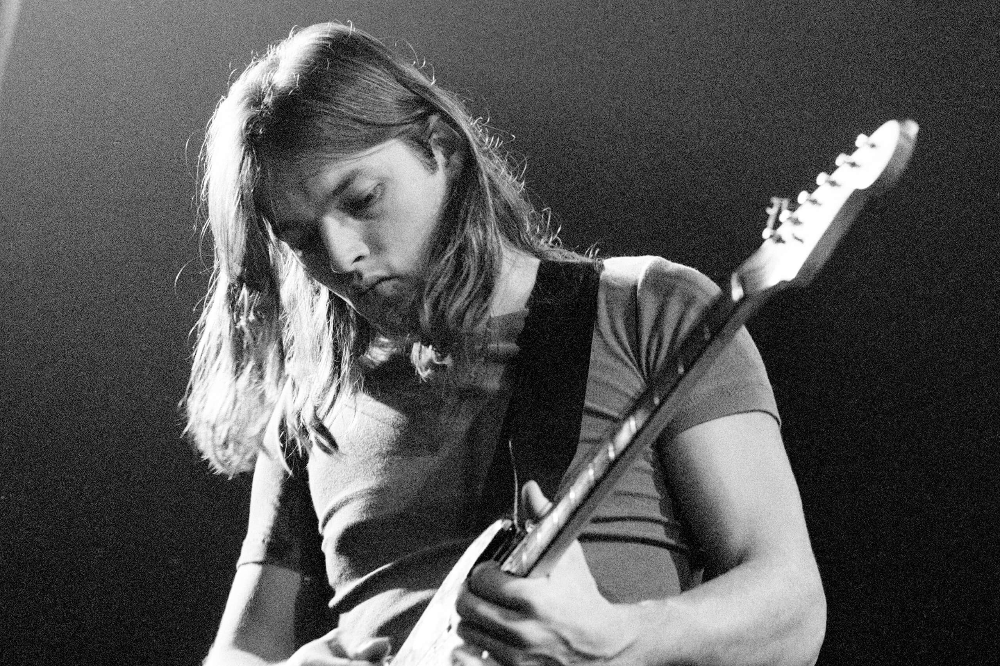

These guitarists in this page are great guitarists who I listen to, and I like playing songs from. Most of them are British, and most of the guitarists are or were once part of a great band. All these guitarists have their unique style, and have great skill.
I have listed 8 guitarists who I think are the best, and who I have actually heard pieces from, and I can talk about. For each guitarist, I have written a small bit of information about them, about their playing styles and genres, and I have also included a list of some riffs and solos that are great and you could try playing yourself. I have linked the riffs and solos to their audio videos on youtube so that you can listen to it, and decide whether you like it or not.
Below, I have also included 5 other guitarists who I know or have heard that they are good, but have not actually listened to much of their pieces to judge, so I have only put their name and image, to recognise them as good guitarists. Like Robby Krieger from The Doors, a band I have grown up listening to since the moment I was born.


James Patrick Page (1944 - Present), is the lead guitarist for the British rock band Led Zeppelin. He was awarded the Kennedy Center Honours in 2011, alongside fellow bandmate John Paul Jones. He plays blues, folk, hard rock, or metal. He was known for smearing notes, so when playing riffs, he would strum across strings that didn’t need to be played. He sometimes used to play the guitar with a violin bow for some live concerts.


Notable riffs: Black Dog,
Heartbreaker ,
Whole lotta love ,
Immigrant song
Notable solos:
Stairway to heaven,
Dazed and confused,
Ramble on
Brian Harold May (1947 - Present), was the lead guitarist for the British rock band Queen. He was made a CBE in 2005, for services to the music industry, and for charity work. If you want a fun fact, Brian May has a PhD in astrophysics, and has an IQ of 180. He plays mostly rock, with some tunes on acoustic guitar. He is known for pre-bends, so if you want to sound like him, prebend the note a bit before you play it. If you want to sound like him more, use a coin as a pick, as Brian used a sixpence coin as a pick, because he says that it gives him more control. He also likes layering guitar tracks, to give it an orchestral effect.


Notable riffs:
Stone cold crazy,
Fat bottomed girls,
Tie your mother down
Notable solos:
Bohemian Rhapsody,
I want it all ,
Killer queen
James Marshall Hendrix (1942 - 1970), more commonly known as Jimi Hendrix, was an American guitarist, whose career only lasted 4 years. But left a great legacy behind. He is in the Grammy hall of fame, an award for most missed in 1976, as well as a lifetime achievement in 1992. He plays blues, rock, and R&B, and many of his songs use feedback and wah-wah pedals, and other effects to create his unique sound. He could play the guitar between his legs, behind his back, and even with his teeth, with a guitar pick. He was also known for playing a right-handed guitar upside down, because he didn’t want the knobs in the way of his strumming.

Notable riffs:
Purple haze,
Hey Joe,
The wind cries Mary
Notable solos:
All along the watchtower,
Voodoo chile (slight return)
Mark Freuder Knopfler (1949 - Present), was the lead guitarist for the British rock band Dire Straits. He was made an OBE in 2000, but is not a Sir, because he is not part of the Kingdom of Queen Elizabeth II. He plays rock, roots rock, celtic rock, blues rock, and country rock. He plays the guitar with his thumb and two fingers, and he plays quick rhythmic jabs, which create his unique sound. He also has quick fingers, and plays fast solo lines, which also have his unique picking style.

Notable riffs:
Money for nothing,
Romeo and Juliet,
Lady writer
Notable solos:
Sultans of swing,
Telegraph road,
Tunnel of love
George Harrison (1943 - 2001), was the lead guitarist of the famous British rock band The Beatles. He was awarded an MBE in 1965, but turned down an OBE, just before his death, in 2000. He plays rock, pop, and Indian classical. He played simple tunes, with occasional solos, but the simple tunes majorly impacted many of the Beatles songs. In the early 60’s, his riffs were short, and had that old unique sound to it, played on the lower frets, while in the late 60’s the solos got played more on the higher frets.

Notable riffs:
Day tripper,
Ticket to ride,
I feel fine
Notable solos:
While my guitar gently weeps,
My sweet lord,
Let it be
Eric Patrick Clapton (1945 - Present), was the lead guitarist for British rock bands like The Yardbirds and Cream, until he went on to have a successful solo career. He was made CBE in 2004 for services to music, but he has not been knighted yet. He plays rock, and in the blues form. His solos all were a blend of blues and rock in his early days as a solo artist and in Cream, while it got more gentle and sometimes acoustic in the later of his career.

Notable riffs:
Sunshine of your love,
Lay down Sally,
Layla
Notable solos:
White room,
Crossroads
Edward Lodewijk Van Halen (1955 - 2020), more commonly known as Eddie Van Halen, was the lead guitarist for the American rock band Van Halen, named after him, and his brother Alex. He played hard rock, heavy metal, glam metal, and pop rock. He played in a very unique style, popularising many techniques, and being regarded as one of the best guitarists ever. He used techniques such as two-handed tapping, tremolo picking, and palm muting.


Notable riffs:
Ain't talkin’ bout love,
Panama
Notable solos:
Eruption,
Jump
David Jon Gilmour (1946 - Present) was the lead guitarist for the English rock band Pink Floyd. He was made CBE in 2003 for services to music. He plays progressive rock, psychedelic rock, art rock, and ambient blues rock. He plays long solos, with lots of bending, sliding, vibrato, which are great to listen to. Sometimes, the solo was slow and dreamy, or sometimes it would be hard, and fast. In many Pink Floyd concerts, it would be like jamming sessions, with all the band playing long and hard, and Gilmour played some great solos.

Notable riffs:
Money,
Another brick in the wall (part 2),
Wish you were here
Notable solos:
Comfortably numb,
Shine on you crazy diamond,
Time